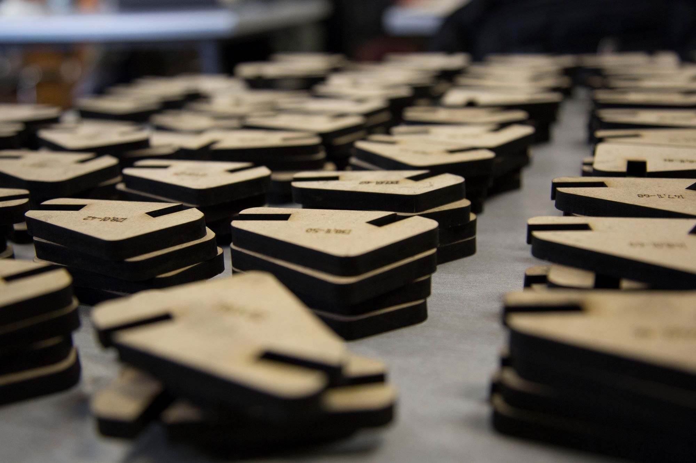

Project Overview
This project introduces an innovative method for designing and fabricating nodes in spatial structures. Instead of relying on expensive high-tech CNC milling or additive manufacturing, it utilizes computational geometry to create interlocking 2D components that can be fabricated using affordable 2D CNC machines. This approach significantly reduces costs, material waste, and fabrication complexity while maintaining structural efficiency and adaptability.
Key Innovations :
Low-Tech Fabrication
Replaces complex 5- or 6-axis CNC milling with 3-axis CNC cutting, making node fabrication faster, cheaper, and more accessible.
Computational Geometry Approach
Uses parametric design to generate adaptable node geometries that work with various lattice structures, from simple grids to complex multi-layer frameworks.
Modular & Reusable Design
The system can be applied to different types of spatial structures, enabling efficient connections between bars while maintaining flexibility in geometric configurations.
Sustainable Construction
Reduces material waste and energy consumption by eliminating subtractive manufacturing and complex molds, making it a more eco-friendly alternative.
Methodology :
Form-Finding & Optimization
The nodes are geometrically optimized to minimize material use while ensuring structural integrity, making them suitable for different spatial configurations.
Fabrication Strategy
The node system is designed for 2D CNC cutting, allowing for precise interlocking elements that can be manufactured with standard laser, plasma, or waterjet cutters.
Assembly Process
Components are designed for easy manual assembly, reducing labor complexity and eliminating the need for heavy machinery.
- 
-

-

-

-